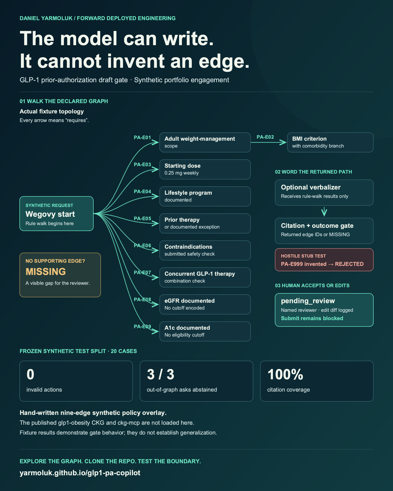

The model can write.
It cannot invent an edge.
LinkedIn materials for the GLP-1 prior-authorization draft gate.
Review the post
Export the graph
The full-resolution graphic and editable vector are ready for your post.


Write once. Check every edge.
The post below keeps the demo scope and test limits explicit.
15 words
244 words
Image alt text
Use this description when adding the image to LinkedIn.
74 words